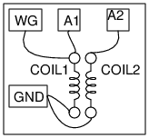

Schematic

Instructions
- The two coils provided with ExpEYES are used as the primay andsecondary.
- WG output is applied to the primary and voltage is monitored on A1.
- Induced voltage on secondary is monitored on A2.
- Make connections and kKeep the coils close and parallel.
- Insert some ferromagnetic marerial through the coils to increase the
voltage induced on the secondary coil.